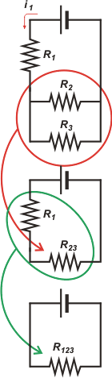

NO ME SALEN
(APUNTES TEORICOS Y EJERCICIOS DE BIOFÍSICA DEL CBC)
ELECTRICIDAD
|
|

|
| |
 |
EM 11) Un circuito eléctrico dispone de una fuente de 200 V. Se conectan tres
resistencias iguales (de 200 ohms) a la fuente como indica la figura. En esta
conexión el resistor sombreado disipará con una potencia de:
a) 33,3W b) 66,6 W c) 100 W
d) 22,2W e) 166,6W f) 200 W |
 |
|
| |
Para calcular la potencia disipada por una resistencia hay que conocer dos del los tres parámetros de la Ley de Ohm: la diferencia de potencial, ΔV, la intensidad de corriente, i, y el valor de la resistencia, R. Y el enunciado nos da un solo dato de los tres: esa resistencia tiene un valor de 200 ohms, pero no sabemos cuál es la diferencia de potencial a la que está sometida ni la corriente que la atraviesa. No va a ser difícil averiguarlo.
Es tan sencillo que podríamos intentar hacerlo mentalmente. Pero hagamos de cuenta que somos unos iniciados en el tema y resolvámoslo como si fuese dificilísimo: simplifiquemos el circuito hasta el máximo posible. |
|
|
Primero: una visión general. De la fuente sale una corriente que pasa íntegramente por la resistencia 1 (verás que aproveché para ponerle nombre a las resistencias). Esa corriente, que llamé i1 por razones obvias, se divide en dos: una parte pasa por la resistencia 2 y otra parte por la 3. Luego se vuelven a juntar las partes y regresa a la fuente, todo lo que sale entra.
No cabe duda de que las resistencias 2 y 3 se hallan en paralelo. Entonces reemplazamos ese paralelo por una resistencia equivalente, que llamaremos R23. Cuando dos resistencias iguales se asocian en paralelo, la resistencia equivalente tiene un valor igual a la mitad de una de ellas, o sea:
R23 = 100 ohms
Si no me creés basta con que hagas el cálculo. (Hacelo).
Ahora estamos en el circuito del medio, que es equivalente al original, pero más simpático. En él no cabe duda de que la resistencia 1 está asociada en serie con la 23 (la corriente está obligada a pasar por ambas). Reemplacemos esas dos resistencias por su equivalente, a la que llamaremos R123, y que no es otra cosa que la resistencia total del circuito. Como en toda serie:
R123 = R1 + R23 = 300 ohms
Como en ese circuito (el más simple posible) hay una sola resistencia y una sola fuente, podemos aplicar la Ley de Ohm con toda tranquilidad, y así sabremos el valor de la corriente que sale de la fuente: |
 |
|
|
` |
i1 = ΔV123 / R123 = 200 V / 300 ohms = 0,667 A
Ahora si mirás el circuito de arriba o mejor el del medio, verás que de la resistencia 1 ya conocemos su valor de resistencia y la corriente que la atraviesa. De modo que Ohm nos dirá a qué diferencia de potencial está sometida:
ΔV1 = R1 . i1 = 200 ohms . 0,667 A = 133 V
Y la diferencia de potencial que afecta a la resistencia R23 (mirá el circuito del medio), del mismo modo...
ΔV23 = R23 . i1 = 100 ohms . 0,667 A = 66,7 V
Lo que no podía ser de otro modo, ya que la suma de las caídas de potencial a lo largo de una serie es igual al potencial de la fuente (67 + 133 = 200).
Ahora sí, volvé a mirar el circuito original. Esta diferencia de potencial que acabamos de encontrar es la misma para las dos resistencias del paralelo. De modo que ya podemos conocer el valor de la corriente que atraviesa a cada una:
i2 = ΔV23 / R2 = 66,7 V / 200 ohms = 0,333 A
i3 = ΔV23 / R3 = 66,7 V / 200 ohms = 0,333 A
Lo que no podía ser de otro modo ya que la suma de ambas corrientes debía valer 0,667 A (la diferencia es efecto del redondeo) y además, al ser dos resistencias iguales ninguna podía permitir un pasaje de corriente mayor ni menor que la otra.
En suma, ya tenemos todos los datos del circuito como para calcular la potencia disipada en cualquiera de las resistencias.
Pot3 = i3 . ΔV23 = 0,333 A . 67 V
|
|
|
|
|
|
También podrías haber calculado la potencia usando el valor de la resistencia...
Pot3 = i3² . R3 = ΔV23² / R3
Y ya que llegamos hasta aquí calculemos las potencias de las otras dos resistencias:
Pot2 = i2 . ΔV23 = 0,333 A . 67 V = 22,2 W
Pot1 = i1 . ΔV1 = 0,667 A . 133 V = 88,9 W
Y sumemos las potencias disipadas en todo el circuito:
PotTOT = Pot1 + Pot2 + Pot3 = 133,3 W
El moño va a ser el cálculo de la potencia entregada por la fuente:
PotF = iF . ΔVF = i1 . ΔV123 = 0,667 A . 200 V = 133,3 W
Te dejo las conclusiones a vos. |
|
|
DESAFÍO: Te espero en la esquina. |
|
 |
| Algunos derechos reservados.
Se permite su reproducción citando la fuente. Se aconseja no arrojar las pilas gastadas en un lago. Última actualización
oct-11. Buenos Aires, Argentina. |
|
|
| | |
|
|